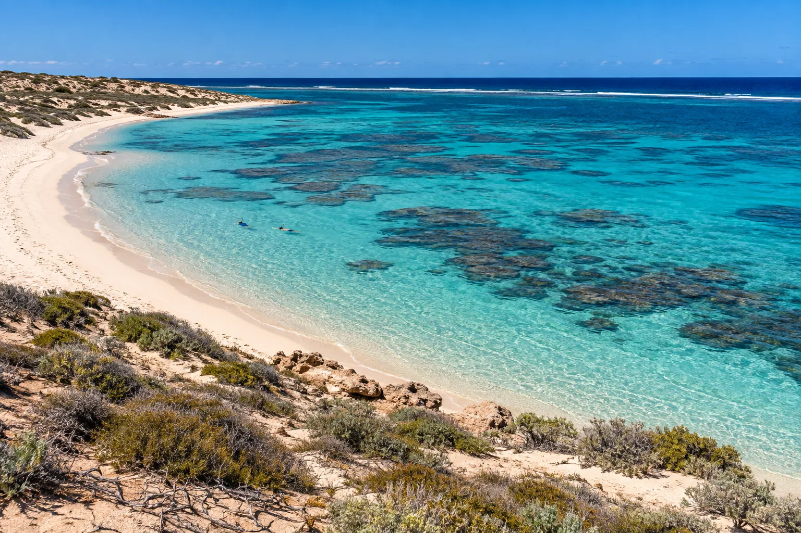

Coral Bay
Australie-Occidentale · snorkeling, plongée

Village où le récif de Ningaloo commence à quelques mètres de la plage. Raies manta et requins-baleines en saison.
- Lieu
- Australie-Occidentale
- Niveau
- Débutant
- Activités
- snorkeling, plongée
- Type d'eau
- Mer / océan
- Coordonnées
- -23.14, 113.77 (position approximative du secteur)
Dangers à connaître
- Courant hors du sanctuaire.
- Faune protégée.
Le conseil d'Ocean Buddy
Nage dans le lagon protégé, et pars en bateau pour les mantas.
Ouvrir dans Ocean Buddy Télécharger sur l'App Store
Source : Fiche Ocean Buddy · septembre 2026 · à vérifier localement.